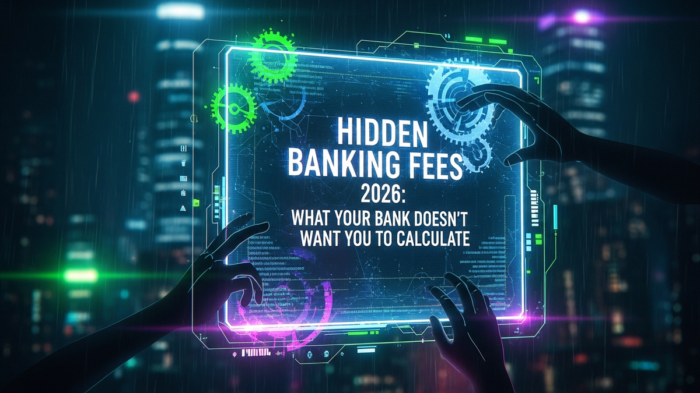

The financial landscape of 2026 is a paradox of convenience and complexity. As digital banking reaches unprecedented levels of sophistication, offering instant transfers, personalized insights, and seamless global transactions, the mechanisms through which banks generate revenue are also evolving. Gone are the days when hidden fees were primarily found in the fine print of a physical contract; today, they’re often embedded in the very algorithms that power your banking experience, subtly influencing your financial decisions and eroding your wealth without overt notification. Your bank, a seemingly indispensable partner in managing your money, has become adept at monetizing every interaction, every convenience, and even every oversight. This article aims to pull back the curtain on these veiled charges, equipping you with the knowledge and tools to calculate the true cost of your banking relationship in the year 2026, ensuring you don't pay a premium for services you could get for less, or worse, for services you never even knew you were receiving.
The dawn of 2026 heralds an era where digital innovation is not just an advantage but a core expectation in banking. With this shift, the traditional fee structures have undergone a profound metamorphosis, making it increasingly challenging for the average consumer to identify where their money is truly going. Banks are no longer just charging for paper statements or teller visits; they are monetizing the very fabric of the digital experience. Consider the proliferation of "premium" digital features. While basic online banking remains free, many institutions now offer enhanced analytics, AI-driven budgeting tools, real-time fraud alerts with advanced customization, or even early access to direct deposits for a monthly subscription fee. These services, often marketed as beneficial enhancements, become an additional layer of recurring cost that wasn't present in prior banking models. The lines between a core banking service and an add-on premium feature are blurring, compelling customers to pay for what once might have been considered standard digital functionality.
Furthermore, the globalized nature of digital finance in 2026 introduces a new frontier for hidden charges. Cross-border digital payments, facilitated by advanced blockchain technologies or instant payment networks, often come with opaque foreign exchange markups. While a bank might advertise "zero transaction fees" for international transfers, the real cost is often baked into an unfavorable exchange rate that significantly differs from the interbank rate. These markups can range from 1% to 5% or even higher, silently siphoning off a portion of every international remittance or purchase. As more consumers engage in e-commerce with international vendors or send money to family abroad, these seemingly small percentages accumulate rapidly, becoming a substantial hidden expense over time. Moreover, the integration of cryptocurrencies and digital assets into mainstream banking platforms, while offering convenience, has also opened avenues for new types of fees. Custody fees for holding digital assets, conversion fees between fiat and crypto, or even network transaction fees (gas fees) that are passed on to the customer with an additional service charge, are becoming common. These charges are often presented in technical jargon or buried deep within the terms and conditions of digital asset accounts, making them difficult for the uninitiated to decipher and calculate.
Another subtle but significant development in 2026 is the emergence of AI-driven personalized fee structures. Banks are leveraging vast datasets and machine learning algorithms to analyze individual customer behavior, segmenting users into various profitability tiers. This allows them to tailor fee waivers, minimum balance requirements, or even interest rates based on your perceived value to the bank. While some might benefit from personalized offers, others might find themselves subtly nudged into accounts or services that carry higher, less transparent fees, simply because their usage patterns indicate a higher tolerance or propensity to pay. For example, a customer who frequently uses out-of-network ATMs might be offered a "premium" account with waived ATM fees, but at a higher monthly service charge that, over time, exceeds the cost of the individual ATM fees they were trying to avoid. The complexity of these personalized models means that comparing banking costs across institutions, or even between different account types within the same institution, becomes an increasingly bespoke and challenging endeavor, requiring a new level of analytical vigilance from consumers.
In the evolving financial landscape of 2026, account maintenance and activity fees, once straightforward monthly charges, have been reimagined and repackaged into more intricate and less transparent structures. What used to be a simple "monthly service fee" is now often contingent on a complex web of conditions, making it harder to avoid or even accurately predict. Minimum balance requirements, for instance, are no longer just about maintaining a static dollar amount. Banks in 2026 are increasingly implementing tiered minimums, average daily balance requirements over a statement cycle, or even combined balance requirements across all accounts held with the institution (checking, savings, investments, loans). Failing to meet these intricate criteria can trigger a fee, which might be a flat charge or a percentage of the shortfall, effectively penalizing customers for not optimizing their entire financial relationship with that specific bank. The fine print detailing these calculations can be exhaustive, requiring customers to engage in complex arithmetic to ensure compliance, a task few are willing or able to undertake regularly.
Moreover, the concept of "activity fees" has expanded beyond simple transaction counts. While some accounts still charge after a certain number of free transactions, 2026 sees the rise of fees related to specific *types* of activity or *lack* thereof. Dormant account fees, for example, are becoming more prevalent and more aggressively applied. If an account remains inactive for a period—which could be as short as six months for some digital-first banks—a monthly fee might be levied, gradually eroding the account balance until it reaches zero. This becomes particularly problematic for emergency savings accounts or those held by individuals who use multiple banking providers. On the flip side, some banks are introducing fees for *excessive* activity, particularly for small, frequent transactions that might strain their real-time processing systems. While often waived for most retail customers, businesses or individuals with high transaction volumes could find themselves facing micro-charges for each transaction beyond a certain threshold, a subtle deterrent designed to optimize bank operational costs.
The rebranding of these fees also plays a significant role in their obfuscation. What was once a "service charge" might now be termed a "relationship maintenance fee" or a "digital platform access charge," imbuing it with a sense of value or necessity. Banks are increasingly pushing customers towards "preferred" or "premium" accounts, which often come with higher minimum balance requirements or direct deposit stipulations, but promise "fee waivers" in return. However, if a customer fails to meet these specific, often stringent, conditions, the waived fees reappear, sometimes at a higher rate than a standard account. This creates a psychological trap where customers believe they are avoiding fees, when in reality they are simply subjected to a different, potentially more onerous, set of conditions. Furthermore, the shift to digital-only statements and communications means that fee changes or new conditions might be communicated via email or through in-app notifications, which can be easily overlooked amidst a barrage of other digital content, leaving customers unaware until they spot the charge on their statement, often months later.
The convenience of instant digital payments and global transfers in 2026 often comes with a complex web of hidden transactional traps that can significantly inflate the true cost of moving money. While banks proudly advertise speed and efficiency, the underlying mechanisms for charging customers have become more sophisticated and less transparent. Consider international wire transfers, a necessity for many in a globalized economy. Beyond the stated wire transfer fee, which can range from $25 to $50 for outgoing transfers, a significant hidden cost lies in the foreign exchange (FX) rate markup. Banks rarely offer the interbank rate, instead applying their own retail exchange rate that includes a hidden spread. This spread, often 1-3% above the true market rate, means that for every $1,000 transferred, you could be losing an additional $10 to $30, entirely invisible unless you meticulously compare rates. Furthermore, intermediary bank fees, often referred to as "correspondent bank charges," can unexpectedly deduct funds from the transfer amount mid-journey, leaving the recipient with less than anticipated and the sender often unaware of the deduction until a discrepancy is reported. These fees are particularly prevalent for transfers involving less common currencies or countries, adding an unpredictable layer of cost.
Even domestic transactions are not immune to these stealthy charges. While ACH transfers are often free, banks in 2026 are increasingly introducing fees for "expedited" or "real-time" ACH payments, capitalizing on the urgency of the sender. These fees might be a flat rate of a few dollars or a percentage of the transferred amount, creating an additional revenue stream for services that are becoming standard. Person-to-Person (P2P) payment services, while widely adopted, also present hidden costs. While many direct P2P transfers are free, moving money from the P2P platform to your bank account instantly often incurs a fee, typically 1-1.5% of the transferred amount. This "instant transfer" fee, while seemingly small, can add up for frequent users, particularly those who rely on P2P platforms for business transactions or regular money exchanges. The allure of immediate access often overshadows the subtle cost, which is diligently calculated by the bank to maximize profitability from customer convenience.
ATM fees continue to be a persistent transactional trap, evolving beyond simple out-of-network charges. In 2026, while many banks offer extensive ATM networks, some account types might still impose fees for using *any* ATM, even within their own network, after a certain number of free withdrawals. More insidiously, some banks, particularly those with a strong digital-first strategy, might charge a fee for depositing cash at an ATM, or for using a non-partner ATM for deposits, even if withdrawals are free. This subtly pushes customers towards digital deposit methods or their specific branch network, creating friction and potential costs for those who prefer cash. Moreover, failed transactions, such as insufficient funds for an attempted debit or a chargeback initiated by the customer, can trigger a cascade of fees. Beyond the initial insufficient funds fee, some banks might charge for each subsequent attempt by a merchant to process the transaction, or for the administrative effort involved in processing a chargeback, effectively penalizing customers multiple times for a single financial misstep. These charges are often clearly outlined in the terms and conditions but are rarely highlighted, making them easy to overlook until they appear on a statement, often after the fact.
Secure your digital wealth with the world's most trusted hardware wallets.
GET YOUR WALLET NOWDespite increased regulatory scrutiny and technological advancements, the stealthy surcharge remains a formidable revenue generator for banks in 2026, particularly through overdrafts, late payments, and newly conceptualized "convenience" fees. Overdraft fees, while slightly mitigated by some institutions offering grace periods or smaller fee amounts, are still a primary pain point. The true insidious nature of overdraft fees in 2026 lies not just in the initial charge, which can still be upwards of $35 per incident, but in the complex ways banks orchestrate the order of transactions. Instead of processing transactions chronologically, banks often reorder them from largest to smallest, maximizing the number of smaller transactions that then trigger an overdraft fee. A single large purchase might deplete funds, but by processing it first, the bank can then charge multiple overdraft fees for smaller, subsequent transactions that would have otherwise cleared if processed before the large one. This practice, while legal, significantly amplifies the financial burden on consumers, turning one mistake into a cascade of costly penalties. Furthermore, "courtesy pay" or "overdraft protection" services, often touted as a benefit, typically involve linking to a savings account or line of credit. While preventing a transaction from being declined, these services often come with their own set of fees, either a transfer fee from the linked account or interest charges on the line of credit, creating a new layer of costs that merely shifts the nature of the penalty rather than eliminating it.
Late payment fees, particularly on linked credit products such as credit cards or personal loans offered by the same banking institution, also represent a significant stealthy surcharge. While the late fee itself is explicit, the hidden cost often comes from the fine print regarding payment processing times. A payment made on the due date, especially through a non-bank channel or after a certain cutoff time, might not be processed until the next business day, thereby triggering a late fee even if the customer initiated the payment on time. Banks often impose earlier cutoff times for online payments or require several business days for payments originating from external accounts to clear, creating a narrow window for timely payments and increasing the likelihood of a late fee. This can be particularly frustrating for customers who meticulously manage their finances but fall victim to these internal processing lags. Moreover, the late payment can also trigger a penalty APR (Annual Percentage Rate) on credit cards, which is a significantly higher interest rate applied to outstanding balances, effectively penalizing the customer not just once for the late payment, but continuously until the balance is paid off, making it a prolonged and substantial hidden cost.
Finally, the proliferation of "convenience" fees in 2026 is a growing concern. These are charges levied for using specific channels or methods that banks deem "non-standard" or "premium," even if they are often the most practical for the customer. For example, some banks might charge a fee for making a payment over the phone with a customer service representative, despite providing a seemingly helpful service. This nudges customers towards less costly (for the bank) digital self-service options. Similarly, obtaining a physical bank statement, which was once standard, might now incur a monthly fee, pushing customers towards digital statements that save the bank printing and mailing costs. Even withdrawing cash from a teller inside a branch, particularly for larger sums or specific denominations, could potentially incur a "special handling" or "cash management" fee at certain institutions, especially those heavily investing in digital-only models. These fees are often small individually, perhaps $2-$5, but their cumulative effect over a year can be substantial, representing a stealthy surcharge for accessing traditional banking services through non-preferred channels, cleverly designed to funnel customer behavior towards the bank's most cost-efficient operations.
In the complex banking environment of 2026, proactively unmasking and avoiding hidden fees requires a multi-faceted approach, leveraging both technological tools and strategic personal finance practices. One of the most powerful tools at your disposal is the suite of financial aggregation apps. Platforms like Mint, Personal Capital, or newer AI-driven aggregators can link all your bank accounts, credit cards, and investment portfolios in one place. Crucially, many of these apps now feature advanced analytics that can automatically categorize transactions and, more importantly, flag recurring fees. Some even offer fee analysis features that highlight unusual charges or consistent monthly deductions that might be hidden maintenance or activity fees. By providing a holistic view of your financial inflows and outflows, these tools make it significantly easier to spot discrepancies or recurring charges that might otherwise go unnoticed across multiple statements. Regularly reviewing the fee summaries provided by these aggregators can be a game-changer in identifying stealthy surcharges and calculating their cumulative impact.
Another indispensable strategy is the diligent and regular audit of your bank statements. While digital statements are convenient, they often lead to less scrutiny. In 2026, make it a habit to download and thoroughly review your statements at least monthly, if not more frequently. Look beyond the transaction list for sections detailing "fees incurred" or "service charges." Pay close attention to the descriptions of these fees, as banks often use vague or technical jargon. If a fee appears unfamiliar or its purpose unclear, do not hesitate to contact your bank for clarification. Maintain a spreadsheet or use a dedicated budgeting app to track all fees charged over a year. This cumulative data can be incredibly illuminating, revealing patterns of charges related to specific transaction types, account behaviors, or even times of the month. Armed with this data, you can then identify which banking habits are costing you the most and adjust your behavior accordingly, or even use this information to negotiate with your bank for fee waivers.
The rise of AI-powered financial assistants and fee trackers is also transforming fee avoidance. Beyond basic aggregation, some cutting-edge platforms now use machine learning to predict potential fees based on your spending patterns and account balances. For instance, an AI assistant might alert you if your balance is likely to drop below the minimum required to waive a monthly fee, or if a planned international transaction is about to incur a significant FX markup, offering alternative solutions. Some services even specialize in negotiating with banks on your behalf to get fees refunded, particularly for overdrafts or late payment charges, leveraging their algorithms to identify instances where a bank might be willing to offer a one-time waiver. While these services might come with their own subscription fees, the potential savings from avoided or refunded bank charges can often far outweigh the cost, making them a worthwhile investment for those with complex financial lives.
Finally, a proactive strategy involves exploring fee-free banking alternatives and being prepared to switch institutions. The competitive landscape of 2026 includes a growing number of challenger banks (neobanks) and credit unions that explicitly market themselves as fee-free, offering transparent pricing models and often superior digital experiences. These institutions typically avoid many of the common charges like monthly maintenance fees, out-of-network ATM fees (through reimbursements), or even foreign transaction fees. While they might not offer the full suite of services of a traditional bank, for many consumers, the cost savings are substantial. Regularly compare your current bank's fees against these alternatives. Don't be afraid to leverage this information when negotiating with your existing bank; loyalty is only valuable if it’s reciprocated with fair terms. Setting up automated alerts for low balances, large transactions, or specific fee triggers can also provide real-time warnings, allowing you to take immediate action to prevent or mitigate charges. By combining technological vigilance with strategic financial planning, consumers in 2026 can effectively unmask and significantly reduce the burden of hidden banking fees.
Navigating the intricate world of banking fees in 2026 demands a level of vigilance and analytical prowess that goes far beyond casual observation. As banks continue to innovate their services, they simultaneously refine their strategies for revenue generation, often embedding charges so subtly within digital interfaces and complex terms that they become nearly invisible to the untrained eye. From the evolving digital platform fees and nuanced account maintenance conditions to the stealthy transactional markups and persistent overdraft traps, the landscape is designed to extract maximum value from every customer interaction. The cumulative effect of these seemingly minor charges can significantly erode your financial resources over time, making it imperative to understand not just what you're paying for, but what you're truly losing.
The power to reclaim control over your finances lies in proactive engagement. By leveraging the advanced capabilities of financial aggregation apps, diligently auditing your statements, and exploring the benefits of AI-powered fee trackers, you can transform from a passive recipient of banking services into an informed and empowered financial steward. The market offers viable alternatives in the form of transparent neobanks and community-focused credit unions, providing options for those seeking a fee-light or fee-free banking experience. Ultimately, the onus is on the consumer to meticulously calculate, question, and challenge the hidden costs presented by financial institutions. Only through such sustained awareness and strategic action can you truly ensure that your hard-earned money remains in your pocket, rather than silently contributing to your bank's bottom line. The era of blind trust in banking is over; 2026 is the year for informed financial liberation.
Don't wait for the headlines. Our Private Telegram Channel delivers real-time AI security updates and digital wealth strategies before they go viral. Stay protected. Stay ahead.
⚡ JOIN THE 1% NOW